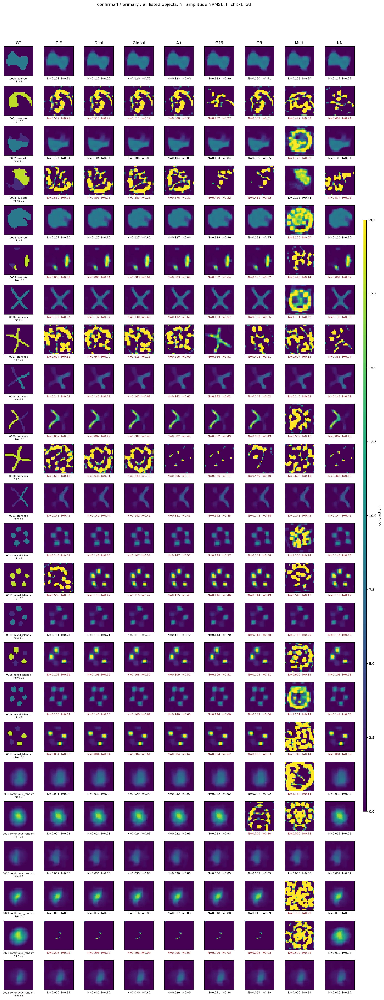
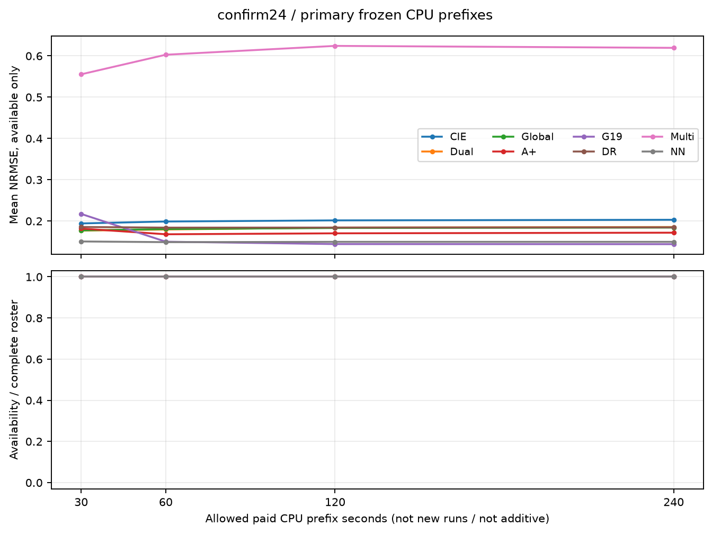
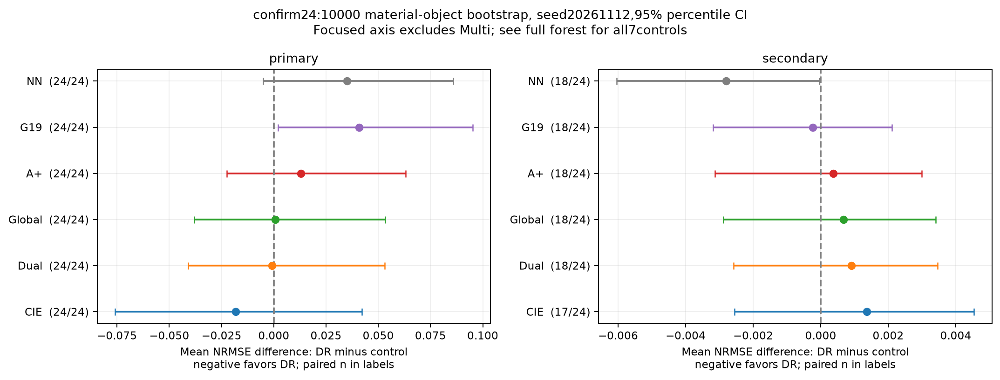
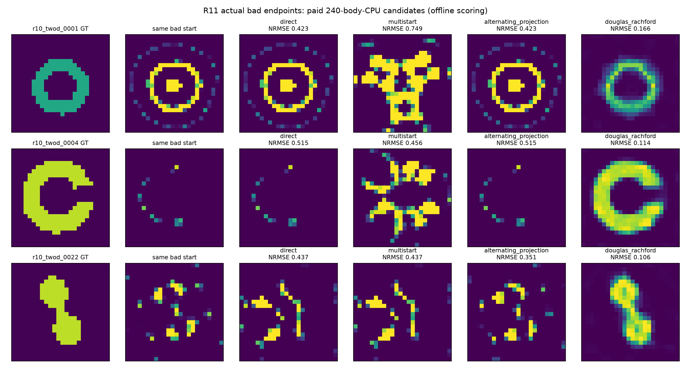
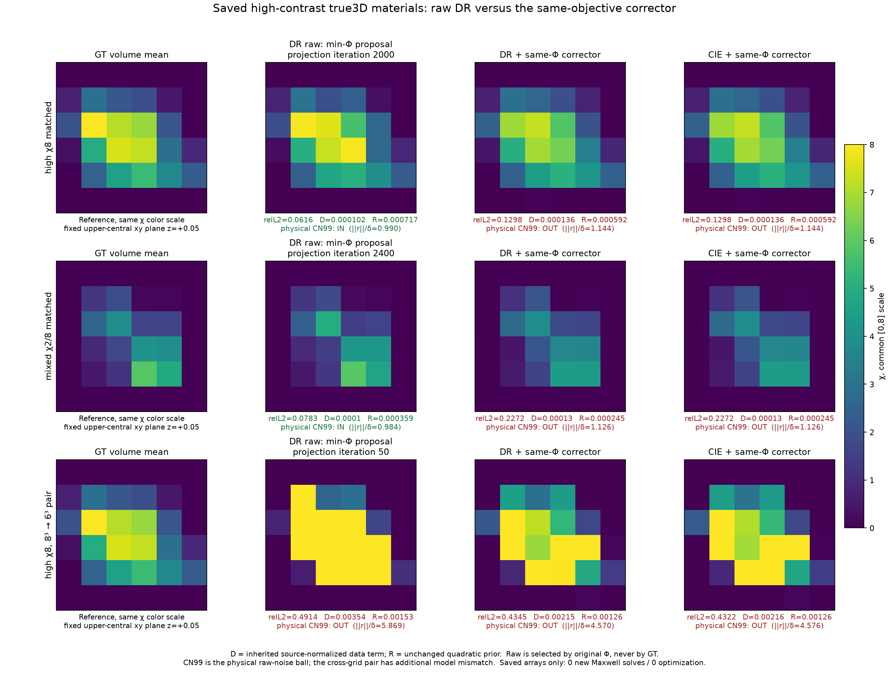
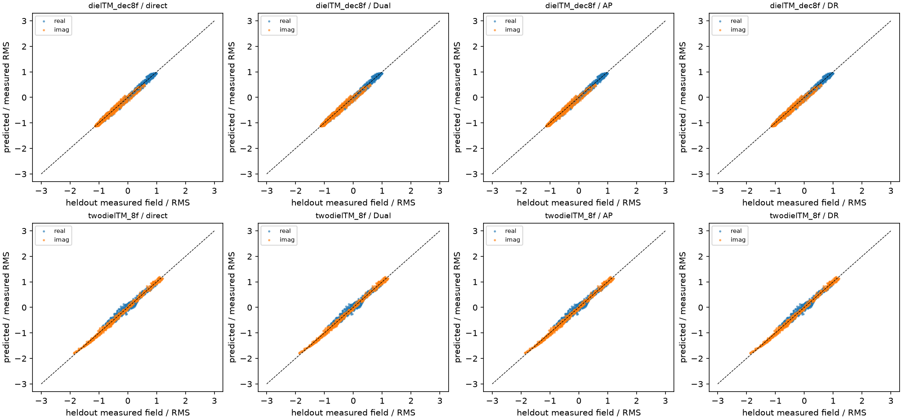
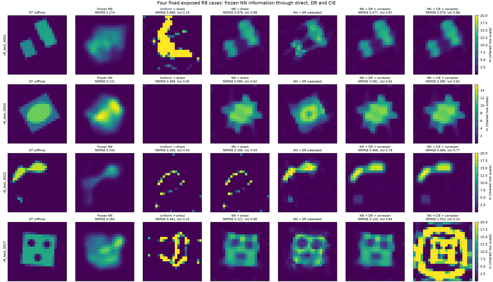

反射状态能否救回
Maxwell反演的坏终点？
DR在指定坏终点救援与完整神经初值接续中有实际价值；G19在独立24对象的常规二维反演中显示材料恢复增量。按用途评价优势，同时分开结构恢复、定量材料与计算成本。
结构恢复与定量恢复分开阅读
旧阈值未过≠没有结构恢复。原来的7/24只指NRMSE、阈值IoU与合法性的旧定量合取条件，不能概括总体成像能力。新增视图使用完全相同的封存primary数组、0..20色标及原NRMSE/IoU，统一中性文字，取消二值红标；历史图和全部原分数保留。
主线程逐图事后评审：DR有18/24主要结构或主成分可辨，其中10个S（主要整体结构）、8个P（主成分恢复但弱结构/细节不足）；Dual/Global/A+各19/24，G19与NN各20/24，CIE18/24，Multi7/24。这是单人、事后、非盲S/P/F描述，不替代预注册统计，也不是新的确认成功率或显著性结论。阅读主线程结构评审与全部逐对象判读。
例如0009中七臂找回主要高对比分支，但弱分支与幅值仍偏；不应与错误的大面积结构一概归为无恢复。该具体判读由主线程评审给出，不改变算法候选和原统计。
四家族中性结构图与0009详细对照0009完整/弱结构并列原图保留的原评分图历史

0009细图并列完整χ∈[0,20]与固定[0,3]弱结构窗口。右窗仅通过显示饱和辅助观察弱分支，χ>3均饱和，不能用其证明幅值准确；两窗数值标签均取完整数组的原指标。所有版本均无新forward、无重新优化、无GT在线选择更改。
综合评价：正面结果应按用途看
坏终点干预是DR最扎实的正面证据；NN→DR四个开发对象平均NRMSE为0.0862，对照NN→direct为0.1419、该NN→CIE接口为0.3089。DR的累计body CPU为78.43秒，比direct的43.44秒更高，比该CIE接口104.46秒更低。0022的修复与0027的结构保留不能被平均“胜负次数”掩盖；表示接口与反射作用尚未单独隔离。
G19独立24的平均NRMSE为0.1439，CIE为0.2029、Dual为0.1855；60秒已付费前缀也有正向增量，30秒则受前置成本影响。不要求所有对象全胜，但保留0001/0003/0010/0022等反例和完整费用。
独立24：主结果完整呈现
水平集、分支、混合岛、连续随机材料四家族各6对象。保留全部576个实材料变量，χ∈[0.02,20]，相同公开观测与先验，GT与求解分离。主规则始终为最小物理Φ=D+R；开发6与确认24分开评分。
| 方法 | 主平均幅值NRMSE ↓ | 旧定量合取条件 | 次规则可用 | 平均整进程CPU s |
|---|---|---|---|---|
| CIE | 0.20293 | 9/24 | 18/24 | 136.609 |
| Dual | 0.18546 | 9/24 | 19/24 | 136.185 |
| Global | 0.18401 | 9/24 | 19/24 | 135.710 |
| A+ | 0.17169 | 9/24 | 19/24 | 152.024 |
| G19 | 0.14389 | 9/24 | 20/24 | 178.758 |
| DR | 0.18463 | 7/24 | 18/24 | 128.448 |
| Multi | 0.61936 | 4/24 | 11/24 | 219.280 |
| NN→direct | 0.14951 | 9/24 | 20/24 | 85.811 |
旧定量合取条件：合法箱约束、NRMSE≤0.15且χ>1 IoU≥0.7。连续材料阈值IoU不等同物理支撑恢复。RMSE=‖m−GT‖₂/24；幅值NRMSE=RMSE/(max(GT)−0.1)；relative L2=‖m−GT‖₂/‖GT‖₂。NN为冻结网络初值→direct；Multi为付费直接多起点。
DR的17个旧描述未通过对象中，11个在原始CN99球内，NRMSE均≤0.15、IoU未达旧阈值，平均relative L2=0.4035；另6个球外对象体现搜索/拟合不足。保存干净观测验证24/24 GT也在同球内。11例有两个合法、有限噪声兼容的不同材料，不能据此声称精确非唯一性或所有先验都无法识别。

次规则独立展示，缺失保留
次规则只在已付费完整物理候选中，选择原始CN99内最小同一R，平局按Φ；0新forward、不反馈迭代。由公开高3D开发诊断启发，在24数据生成后、确认反演与评分前冻结。共144/192可用、48 unavailable；不替换主候选、不删除对象。开发6未登记，全部不可用。
次规则DR−Dual +0.000912，区间[−0.002574,+0.003465]；DR−G19 −0.000232，[−0.003182,+0.002107]，双方可用配对均18/24。条件可用均值不能与全24主均值直接比较。


不同证据分别计数
| 分组 | 实际对象 / 用途 | 证据边界 |
|---|---|---|
| 独立确认 | 新二维24材料×8方法 | 主要冻结方法比较 |
| 开发 | 开发6；原Pro玩具4；既有R8神经4 | 已暴露案例与运行/机制诊断，不并入24 |
| 坏终点 | R11 ring/shell/bridge保存终点3个 | 同起点付费续跑的条件救援 |
| 外部 | Fresnel单/双介质实测；Austria跨网格与matched32 | 实测留出拟合；合成负例 |
| 真实向量3D | 中等/高对比各2几何，另有配对跨网格观测 | 续跑和跨网格条件不增加独立对象数 |
R11坏终点：条件救援成立的范围
同一保存物理终点续跑，direct / 平滑多起点 / AP / DR 的240 body-CPU前缀NRMSE：ring 0.42288 / 0.74888 / 0.42288 / 0.16585；shell 0.51514 / 0.45633 / 0.51514 / 0.11377；bridge 0.43673 / 0.43673 / 0.35144 / 0.10617。
DR恢复主体形状，但仅shell通过旧描述阈值。ring/shell有约束局部极小证据；bridge有负曲率/未收敛，不能把三者均称严格局部极小。均匀起点G19可恢复ring，CIE可恢复shell/bridge。

高对比向量3D：raw与校正分开
真实dyadic CM+RR DDA，6³反演、648电流分量，χ=8或2/8。两个matched几何中raw DR relative L2=0.06163、0.07832，共同Φ校正后为0.12978、0.22724；residual/δ由0.9902、0.9839变为1.1439、1.1257。Φ下降主要来自R下降，而数据和材料误差增大。
这揭示候选选择/共同校正可能掩盖有用状态；本24未重现同样球内→球外转移。跨网格DR最终relative L2≈0.4345，干净观测模型差26.16%，不能宣称连续高对比3D准确恢复。中等对比统一长校正后各方法基本重合。

实测Fresnel与Austria负例
两份真实Fresnel2001单/双介质数据保留711个留出通道。共同校正后及完整Dual控制的留出残差约0.0915 / 0.0986；无可靠像素GT，不报告实测材料NRMSE。0.15训练半径为模型误差诊断，非iid噪声证书。
Austria150²→32²失配的DR最终NRMSE=2.13198；matched32中GT在指定球内，DR仍为2.25391。低残差不保证材料恢复；模型失配不能独自解释所有失败。matched32为后续诊断，非新确认。

神经初值：4个已暴露开发对象
uniform-direct / NN-direct / NN-DR / NN-CIE平均NRMSE=0.44699 / 0.14186 / 0.08621 / 0.30886；主要改善集中0022，其余接近或略退化。冻结网络未重训；无NN→AP单因素控制，不能把全部增益归于反射。
累计body CPU=39.273 / 43.438 / 78.432 / 104.459秒，共同上限不等于相同实际耗时。独立24的NN臂仅为NN→direct。

成本与限制
8个P核、单BLAS线程。整子进程CPU上限240秒，proposal144、corrector96；成熟500/500/500/1500阶段及3000步校正器原规则不人为缩短，按已接受轨迹前缀取候选。确认317,576次576维物理LU、7,598,304复RHS；开发48次有效运行7,189.688 CPU秒。13次setup前启动失败另付0.90625 CPU秒，保留来源；科学任务均执行完成。
五baseline显式BelowNormal；search继承controller。一次中途实际快照为baseline BelowNormal、controller/search Normal，不能代表全程已核验。满载多数选定核约1466MHz；未改电源策略、未证明具体限频原因。不把CPU成本换算为普适壁钟吞吐。
评分/制图27.371 CPU秒，0新forward、0新优化。生成、传输、控制器、封存等分账保留；没有冒充精确全研究总成本。
文档与复现
以下为现有仓库的计划同步位置，尚未核验R12远端发布；本地可阅读同名文件。